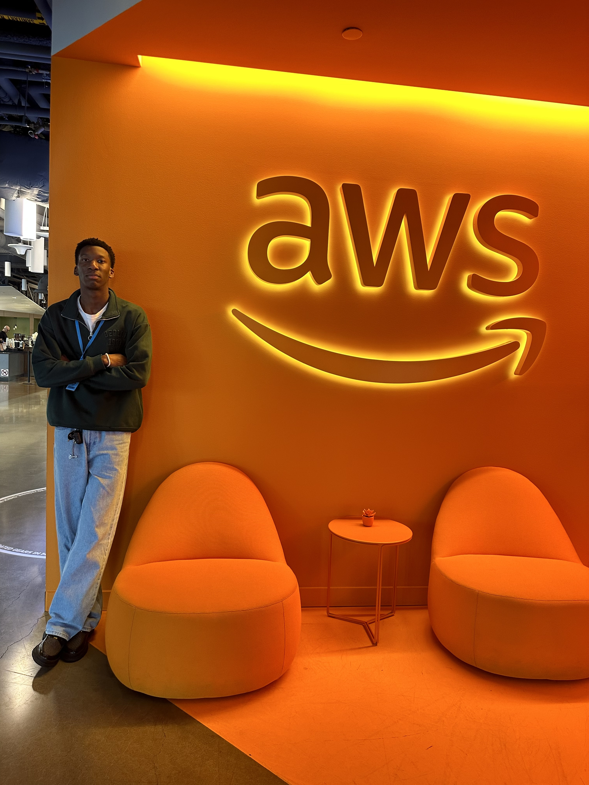

Introduction
Currently at Clarkson University studying for a Bachelor's degree in Computer Science and Mathematics with plans to graduate in May 2025, Kolade Ayeni aspires to leave a mark in the technology sector as a first-generation college attendee. He is passionate about making notable contributions to groundbreaking software development while pushing forward the realms of machine learning and data analysis.

Professional Experience
Kolade's experience in internships at prestigious companies such as Amazon Web Services and contributions to biometrics research at Clarkson University have significantly strengthened his skills in software engineering. He has created scalable solutions for managing resources better and enhancing system performance while decreasing latency, resulting in a 30% improvement in system performance. Additionally, Kolade's efforts in preprocessing data have boosted throughput by 50% through innovative algorithm design.
Leadership and Community Engagement
Kolade is deeply committed to leadership and community engagement, as evidenced by his role as the president of the National Society of Black Engineers. His exceptional leadership skills and unwavering dedication have earned him accolades such as the Black Excellence Award and membership in Clarkson’s esteemed PHALANX Honor Society.